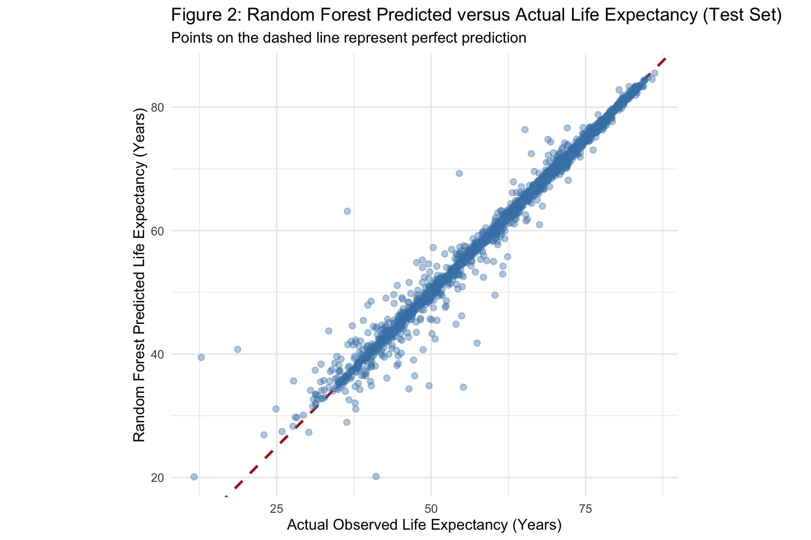
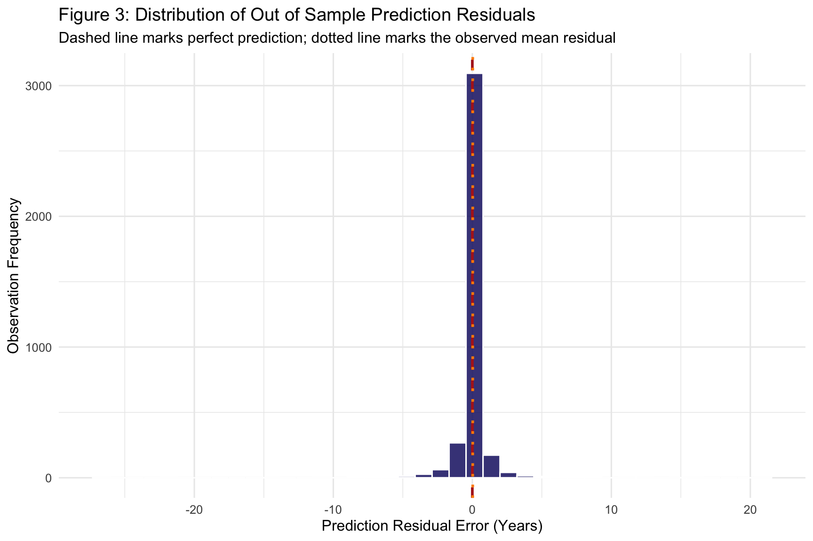
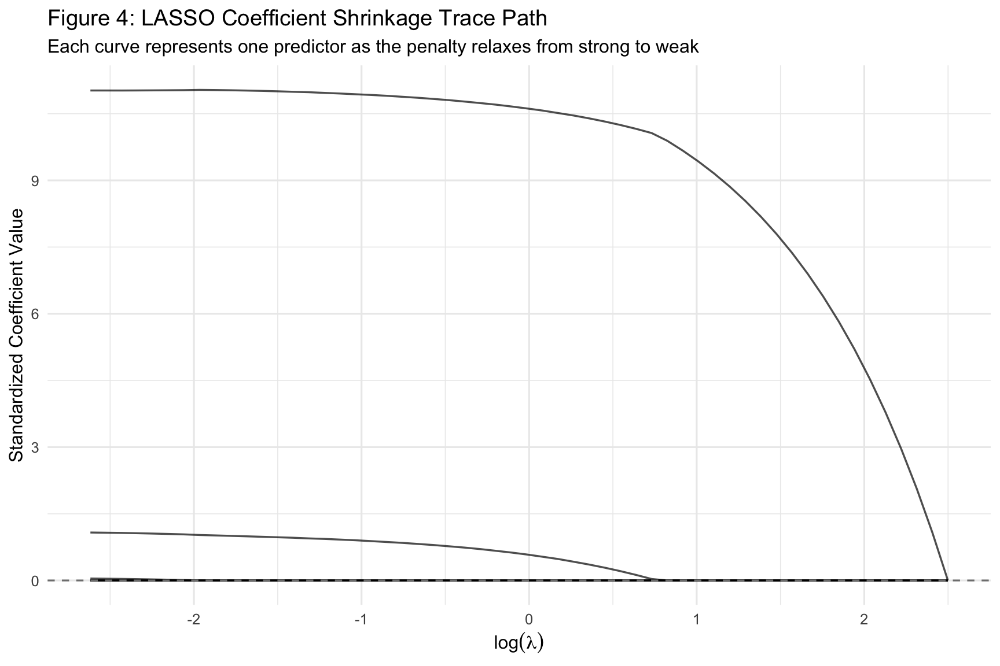
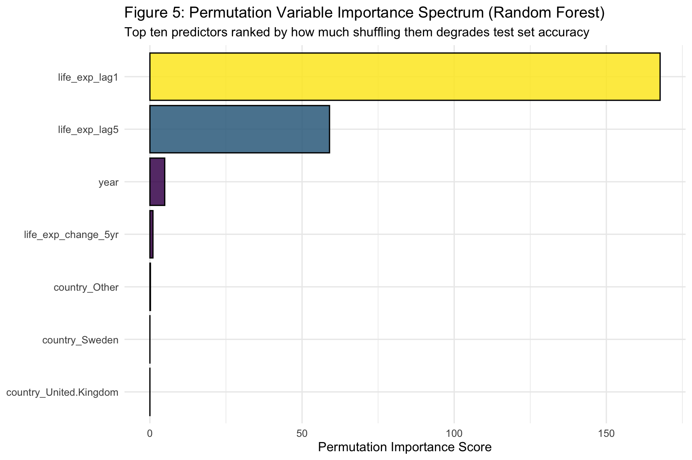

Comparing OLS, LASSO Regularization, and Random Forests in Health Trajectories
Author
Neena Abimbola Albarus
1. Theoretical Motivation and Methodological Overview
Traditional statistical modeling in the social sciences is built around explanatory inference. When we fit an OLS regression, we are usually trying to answer questions like “Is this predictor statistically significant?”, “How large is this effect?”, and “How confident are we in this parameter estimate?” The tools we rely on such as p values, confidence intervals, and unbiased coefficients are designed to help us make credible causal or descriptive claims about the population we are studying.
Machine learning, by contrast, is built around predictive performance. Instead of asking whether a coefficient is significant, we ask: “How well does this model predict new, unseen observations?” This shift in emphasis means we care much more about out of sample error, cross validated accuracy, and whether the model generalizes beyond the specific data it was trained on. A model with a biased coefficient can still be an excellent predictor, and the reverse is also true.
In this workbook, we implement the tidymodels framework to compare three very different modeling strategies on the same dataset:
OLS baseline: the classical linear regression that assumes a linear relationship between predictors and outcome and applies no penalty to coefficients.
LASSO regularization: a linear model that shrinks coefficients toward zero, effectively performing automatic variable selection and reducing overfitting when you have many predictors.
Random Forest: a non parametric ensemble method that grows hundreds of decision trees and averages their predictions, allowing it to capture complex non linear interactions that linear models miss entirely.
By training all three on identical train and test splits and evaluating them with identical metrics, we can see in a controlled way how much predictive accuracy we gain or lose as we move from a rigid, interpretable linear model to a flexible, harder to interpret ensemble.
⚠️ Common Pitfalls
Confusing explanation with prediction. A significant p value does not mean a model predicts well, and a low RMSE does not mean a coefficient is causally meaningful. These are two different scientific goals. Conflating them leads to badly framed research questions.
Assuming that more complex is always better. Random Forests are flexible, but on small or noisy datasets they can easily underperform a well specified linear model. Always benchmark against a simple baseline before reaching for an ensemble.
Using p values to judge machine learning models.tidymodels will not produce p values for Random Forests, and that is by design. Do not try to force inferential interpretation onto a predictive tool.
2. Environment Setup and Data Pipeline
Before we can model anything, we need to locate the raw data on disk, standardize the column names so our code does not break if the source file changes, and engineer the lag features that will act as our predictors. This section walks through each of those steps.
# Dynamic path resolution across standard working directoriescandidate_paths <-c("data/life_expectancy_data.csv","../data/life_expectancy_data.csv","~/Desktop/R for github/Spatial Econometrics and Geographic Clustering/data/life_expectancy_data.csv")data_path <- candidate_paths[file.exists(candidate_paths)][1]if (is.na(data_path) ||length(data_path) ==0) {stop("Could not locate 'life_expectancy_data.csv'. Please verify it exists in your project data directory.")}message("Loading data from: ", data_path)# Ingest the raw OWID datasetowid_raw <-read_csv(data_path, show_col_types =FALSE)# Standardize column naming conventions defensivelyowid_clean <- owid_raw %>%rename_with(~case_when( .x =="Entity"~"country", .x =="Code"~"code", .x =="Year"~"year", .x =="Life expectancy"~"life_exp",TRUE~tolower(.x) )) %>%filter(!is.na(life_exp), !is.na(code))# Engineer lag features within each country time seriesml_dataset <- owid_clean %>%group_by(country) %>%arrange(year, .by_group =TRUE) %>%mutate(life_exp_lag1 =lag(life_exp, n =1, order_by = year),life_exp_lag5 =lag(life_exp, n =5, order_by = year),life_exp_change_5yr =lag(life_exp, n =1, order_by = year) -lag(life_exp, n =6, order_by = year) ) %>%ungroup() %>%drop_na(life_exp_lag1, life_exp_lag5, life_exp_change_5yr) %>%mutate(country =as.factor(country))glimpse(ml_dataset)
What is happening here: The candidate_paths vector lets the workbook run from multiple working directories. This is useful when the file is opened from the project root, from a reports subfolder, or from a specific machine path. We then read the OWID CSV and defensively rename its columns using rename_with() with a case_when() helper. This replaces the fragile if statement from the original version and correctly handles any combination of column names in a single pass. Finally, we engineer three lag features: life expectancy one year ago, five years ago, and the five year change. Past values are extremely strong predictors of current values in health trajectories. Observations missing these lags are dropped with a scoped drop_na() call so that we preserve every observation that has the variables we actually need.
⚠️ Common Pitfalls
Forgetting to sort by year before lagging.dplyr::lag() is positional. It grabs whatever row came immediately before in the current data frame order. If your data is not sorted by year within country, you will silently create lags from the wrong year, and the model will still fit without complaint. The order_by = year argument added here protects against this.
Losing the panel structure by dropping NAs globally. Using drop_na() without specifying columns wipes out observations for any missing variable. We scope it to just the lag columns so we preserve as much data as possible.
Hardcoded absolute paths. The home directory fallback is convenient locally but will break instantly on any other machine. Treat it as a last resort fallback, not a permanent solution.
3. Data Partitioning and Cross Validation Architecture
Before fitting any models, we need to split our data into a training set the models learn from and a test set we hold back to evaluate true out of sample performance. We also set up cross validation folds on the training data so that we can tune and compare models without ever touching the test set prematurely.
# A tibble: 2 × 4
Set Observations Mean_LifeExp SD_LifeExp
<chr> <int> <dbl> <dbl>
1 Training 14991 63.3 12.3
2 Test 3748 63.4 12.2
What is happening here: We use an 80 20 split, meaning 80 percent of the observations are used for training and 20 percent are reserved for the final test. The strata = life_exp argument ensures that the distribution of the outcome variable is preserved across both splits. This is critical when your outcome has a skewed or multimodal distribution, which life expectancy certainly does. We then create five cross validation folds, again stratified on the outcome, so that model performance can be assessed on five different held out slices of the training data rather than relying on a single arbitrary split. Setting the seed guarantees reproducibility. The split_summary table gives us a quick visual check that the stratification actually worked.
⚠️ Common Pitfalls
Touching the test set too early. Once you call predict() on test_data, you have burned it. If you use the test set to pick between models, tune hyperparameters, or eyeball results and then iterate, it stops being a fair estimate of out of sample performance.
Not stratifying on the outcome. With an unstratified split, one fold may end up containing mostly high life expectancy countries and another mostly low, giving wildly inconsistent RMSE across folds.
Skipping the seed. Every split, every fold assignment, and every Random Forest bootstrap sample depends on the random number generator. Without a seed, your reproducible analysis will produce different numbers tomorrow.
4. Feature Engineering Recipes and Model Specifications
The recipes package lets us define a preprocessing pipeline that travels with the model, so the exact same transformations are applied to training, cross validation, and test data automatically. This is essential for avoiding data leakage and keeping our workflow honest.
# Define the preprocessing recipeml_recipe <-recipe( life_exp ~ year + life_exp_lag1 + life_exp_lag5 + life_exp_change_5yr + country,data = train_data) %>%step_other(country, threshold =0.01, other ="Other") %>%step_dummy(all_nominal_predictors(), one_hot =FALSE) %>%step_zv(all_predictors()) %>%step_normalize(all_numeric_predictors())# Define three model specificationsols_spec <-linear_reg() %>%set_engine("lm") %>%set_mode("regression")lasso_spec <-linear_reg(penalty =0.05, mixture =1) %>%set_engine("glmnet") %>%set_mode("regression")rf_spec <-rand_forest(mtry =3, trees =500, min_n =5) %>%set_engine("ranger", importance ="permutation", seed =2026) %>%set_mode("regression")# Bundle each spec with the recipe into a workflowols_wf <-workflow() %>%add_recipe(ml_recipe) %>%add_model(ols_spec)lasso_wf <-workflow() %>%add_recipe(ml_recipe) %>%add_model(lasso_spec)rf_wf <-workflow() %>%add_recipe(ml_recipe) %>%add_model(rf_spec)# Confirm the recipe produces expected preprocessingprep(ml_recipe, training = train_data) %>%bake(new_data =NULL) %>%slice_head(n =3)
What is happening here: The recipe defines the model formula and then applies four preprocessing steps:
step_other() collapses rarely observed countries into an “other” category. Otherwise countries appearing only a handful of times would create near empty dummy columns.
step_dummy() converts the country categorical variable into binary indicator columns.
step_zv() drops any predictors with zero variance, meaning constant columns that carry no information.
step_normalize() standardizes all numeric predictors to mean zero and unit variance. This matters for LASSO, which penalizes coefficients on a common scale.
We then define three model specifications. A vanilla OLS via lm, a LASSO with penalty = 0.05 and full L1 regularization via glmnet, and a Random Forest with 500 trees, mtry = 3 predictors tried per split, and a minimum node size of 5 via ranger. The seed argument inside set_engine() guarantees that the Random Forest is reproducible. Each specification is paired with the recipe through a workflow(), giving us three self contained, reproducible pipelines. The final prep() and bake() call confirms that the recipe is producing the expected transformed columns before we spend time fitting models.
⚠️ Common Pitfalls
Preprocessing on the full dataset. Never run step_normalize() or step_dummy() on the combined train and test data. The recipe must be learned on the training set only and then applied to the test set. tidymodels handles this automatically, but only if you keep preprocessing inside the recipe.
Hardcoding hyperparameters. The values penalty = 0.05, mtry = 3, trees = 500, and min_n = 5 are educated guesses. In a production workflow you would tune these via tune_grid() against cross validation folds. Hardcoding is fine for a teaching exercise, but be aware you are leaving accuracy on the table.
Forgetting set_mode("regression"). Both linear_reg() and rand_forest() default to classification in some versions. Explicitly declaring the mode protects you against silent failures if the outcome is ever coerced to a factor.
5. Model Training and Cross Validation Evaluation
Now we actually fit each workflow across the five cross validation folds and collect the resulting performance metrics. This is where we first see which model architecture performs best on held out slices of the training data, long before we touch the test set.
eval_metrics <-metric_set(rmse, rsq, mae)ols_cv_results <-fit_resamples( ols_wf,resamples = cv_folds,metrics = eval_metrics,control =control_resamples(save_pred =FALSE))lasso_cv_results <-fit_resamples( lasso_wf,resamples = cv_folds,metrics = eval_metrics,control =control_resamples(save_pred =FALSE))rf_cv_results <-fit_resamples( rf_wf,resamples = cv_folds,metrics = eval_metrics,control =control_resamples(save_pred =FALSE))# Bind the three result sets into one tidy summary tablecv_summary <-bind_rows(collect_metrics(ols_cv_results) %>%mutate(Model ="OLS Baseline"),collect_metrics(lasso_cv_results) %>%mutate(Model ="LASSO Regularized"),collect_metrics(rf_cv_results) %>%mutate(Model ="Random Forest"))# RMSE summary for the figure belowcv_rmse <- cv_summary %>%filter(.metric =="rmse") %>%select(Model, Mean_RMSE = mean, Std_Error = std_err) %>%arrange(Mean_RMSE)cv_rmse
# A tibble: 3 × 3
Model Mean_RMSE Std_Error
<chr> <dbl> <dbl>
1 Random Forest 1.48 0.0141
2 OLS Baseline 1.58 0.0285
3 LASSO Regularized 1.58 0.0269
# Full metric table across all three metricscv_summary %>%select(Model, .metric, mean, std_err) %>%arrange(.metric, mean)
# A tibble: 9 × 4
Model .metric mean std_err
<chr> <chr> <dbl> <dbl>
1 Random Forest mae 0.577 0.0166
2 OLS Baseline mae 0.608 0.00460
3 LASSO Regularized mae 0.618 0.00457
4 Random Forest rmse 1.48 0.0141
5 OLS Baseline rmse 1.58 0.0285
6 LASSO Regularized rmse 1.58 0.0269
7 LASSO Regularized rsq 0.984 0.000549
8 OLS Baseline rsq 0.984 0.000571
9 Random Forest rsq 0.986 0.000267
What is happening here: We define three evaluation metrics: RMSE (root mean squared error, in the same units as life expectancy), R squared (proportion of variance explained), and MAE (mean absolute error, more robust to outliers). Then fit_resamples() trains each workflow on every fold and computes those metrics. We bind the three result sets together and produce two summary tables. The first keeps only RMSE and sorts by mean error so we can see the ranking at a glance. The second shows all three metrics side by side so we can check whether a model wins on one metric but loses on another. Lower RMSE and MAE mean better predictive accuracy. Higher R squared means the model explains more of the variance.
⚠️ Common Pitfalls
Reporting only RMSE. RMSE is sensitive to large errors, MAE is sensitive to typical errors, and R squared tells you about variance explained. A model can win on one metric and lose on another. Always look at all three before declaring a winner.
Ignoring the standard error. If Model A has RMSE 3.12 plus or minus 0.40 and Model B has RMSE 3.15 plus or minus 0.42, they are statistically indistinguishable. Do not crown a winner based on a difference smaller than the noise.
Comparing models trained on different folds. If you re run vfold_cv() separately for each model, the folds will differ and the comparison becomes unfair. Reuse the same cv_folds object across all three fit_resamples() calls.
6. Comprehensive Visualizations
The figures below tell the story of the model comparison visually. First across the cross validation folds, then on the held out test set, and finally through the lens of residual diagnostics and feature importance.
Figure 1: Out of Sample Cross Validation RMSE Comparison
How to read this figure: Bars are sorted from best (lowest RMSE) to worst, and the error bars represent plus or minus one standard error across the five cross validation folds. If two models error bars overlap substantially, their performance difference is not distinguishable from noise. The numeric labels on top of each bar give the exact mean RMSE in years.
🔑 Key Takeaway: The lowest bar is your provisional winner, but only if it beats the runner up by more than the combined standard error. Always benchmark against the OLS baseline. If the fancy ensemble cannot beat a plain linear model, complexity is not earning its keep.
Figure 2: Predicted versus Actual Life Expectancy
# Refit the Random Forest on the full training setfinal_rf_fit <-fit(rf_wf, data = train_data)# Generate test set predictionstest_predictions <-predict(final_rf_fit, new_data = test_data) %>%bind_cols(test_data) %>%rename(predicted = .pred)ggplot(test_predictions, aes(x = life_exp, y = predicted)) +geom_abline(intercept =0, slope =1,linetype ="dashed", color ="firebrick", linewidth =1 ) +geom_point(alpha =0.4, color ="steelblue", size =2) +coord_equal() +theme_minimal(base_size =12) +labs(title ="Figure 2: Random Forest Predicted versus Actual Life Expectancy (Test Set)",subtitle ="Points on the dashed line represent perfect prediction",x ="Actual Observed Life Expectancy (Years)",y ="Random Forest Predicted Life Expectancy (Years)" )

How to read this figure: We refit the winning Random Forest on the full training set and then generate predictions on the untouched test set. Each point is one country year observation. The dashed red line is the ideal 45 degree diagonal where predictions perfectly match reality. The tighter the point cloud clusters around this line, the better the model. Systematic departures, such as underprediction at the high end, reveal where the model struggles.
🔑 Key Takeaway: A well behaved predicted versus actual plot hugs the diagonal across the entire range. Watch for systematic curvature at the extremes. Random Forests are notorious for regression to the mean bias, underpredicting very high values and overpredicting very low ones because they average across leaf nodes.
# A tibble: 1 × 3
Mean_Residual SD_Residual MAE
<dbl> <dbl> <dbl>
1 0.0289 1.46 0.513
ggplot(test_predictions, aes(x = residual)) +geom_histogram(bins =40, fill ="midnightblue",color ="white", alpha =0.85 ) +geom_vline(xintercept =0, linetype ="dashed",color ="firebrick", linewidth =1 ) +geom_vline(xintercept =mean(test_predictions$residual),linetype ="dotted", color ="darkorange", linewidth =1 ) +theme_minimal(base_size =12) +labs(title ="Figure 3: Distribution of Out of Sample Prediction Residuals",subtitle ="Dashed line marks perfect prediction; dotted line marks the observed mean residual",x ="Prediction Residual Error (Years)",y ="Observation Frequency" )

How to read this figure: Residuals are simply actual minus predicted. A well calibrated model produces residuals centered on zero with no obvious skew or long tails. If the histogram is shifted off zero, the model is systematically biased. If the tails are heavy, the model is making some large individual errors even if average performance looks fine. The red dashed line marks the zero error ideal, and the orange dotted line marks the observed mean residual so you can see the bias at a glance.
🔑 Key Takeaway: A symmetric, tight, zero centered histogram is the hallmark of a well calibrated regression. If the bulk of the residuals sits to one side of zero, the model systematically over or under predicts. If the histogram has fat tails, individual countries are being badly misestimated even if average error looks acceptable.
# Refit LASSO on the full training set and extract the glmnet enginelasso_fit <-fit(lasso_wf, data = train_data)glmnet_obj <-extract_fit_engine(lasso_fit)# Extract the coefficient matrix and the lambda sequencelasso_coefs <-as.matrix(glmnet_obj$beta)lambda_seq <- glmnet_obj$lambda# Build a tidy data frame by pairing each coefficient column with its lambdacoef_df <-as_tibble(lasso_coefs, rownames ="Predictor") %>%pivot_longer(cols =-Predictor,names_to ="Lambda_Column",values_to ="Coefficient" ) %>%mutate(Lambda_Index =as.integer(str_remove(Lambda_Column, "^s")),Log_Lambda =log(lambda_seq[Lambda_Index +1]) )ggplot(coef_df, aes(x = Log_Lambda, y = Coefficient, group = Predictor)) +geom_line(alpha =0.7, linewidth =0.6) +geom_hline(yintercept =0, linetype ="dashed", color ="grey50") +theme_minimal(base_size =12) +labs(title ="Figure 4: LASSO Coefficient Shrinkage Trace Path",subtitle ="Each curve represents one predictor as the penalty relaxes from strong to weak",x =expression(log(lambda)),y ="Standardized Coefficient Value" )

How to read this figure: The x axis is the log of the regularization penalty lambda. Larger penalty appears to the left, smaller penalty to the right. Each curve represents one coefficient path as the penalty is relaxed. At the far left, all coefficients are shrunk to zero. As we move right, more coefficients activate and grow. The vertical axis shows coefficient magnitude. This plot reveals which predictors LASSO considers most important. Those that enter earliest, meaning the rightmost curves, are the strongest signals. Notice that this version rebuilds the plot manually from the glmnet object rather than relying on plot.glmnet(). That gives us full control over the aesthetics and makes the plot behave consistently inside a Quarto document. The critical detail is the Lambda_Index + 1 offset inside the Log_Lambda calculation, because glmnet labels its coefficient columns starting at s0 while R vectors are indexed starting at 1.
🔑 Key Takeaway: LASSO performs automatic feature selection by driving uninformative coefficients all the way to zero. Coefficients that survive at heavy penalties are your most robust predictors. In a health trajectory model, you would expect the lag features to enter first. If they do not, something is wrong with your feature engineering.
Figure 5: Random Forest Permutation Variable Importance
# Extract the underlying ranger fitrf_engine <-extract_fit_engine(final_rf_fit)# Read permutation importance scores directly from the ranger objectimportance_df <-tibble(Variable =names(rf_engine$variable.importance),Importance =as.numeric(rf_engine$variable.importance)) %>%slice_max(Importance, n =10) %>%mutate(Variable =fct_reorder(Variable, Importance))ggplot(importance_df, aes(x = Importance, y = Variable, fill = Importance)) +geom_col(color ="black", alpha =0.85) +scale_fill_viridis_c(option ="viridis", guide ="none") +theme_minimal(base_size =12) +labs(title ="Figure 5: Permutation Variable Importance Spectrum (Random Forest)",subtitle ="Top ten predictors ranked by how much shuffling them degrades test set accuracy",x ="Permutation Importance Score",y =NULL )

How to read this figure: Permutation importance measures how much the model prediction error increases when each predictor values are randomly shuffled. A large increase means the model relies heavily on that variable. A small increase means the model barely uses it. Only the top ten predictors are shown. This is the Random Forest answer to the question OLS answers with t statistics and LASSO answers with coefficient paths, namely what actually drives the predictions. We build the plot manually with ggplot2 and vip::vi() rather than relying on the vip() autoplot method, so that the styling stays consistent with the other figures and does not depend on the package autoplot behavior. The argument value "permute" is required by vi(), even though the underlying ranger engine setting in Section 4 uses the full word "permutation". Both describe the same technique.
🔑 Key Takeaway: If the top ranked predictors in the Random Forest match the top ranked predictors in the LASSO trace path, you have cross model evidence that those variables carry real signal. If the two rankings disagree sharply, be suspicious. The disagreement usually means one model is capitalizing on noise or the two are capturing fundamentally different structures in the data.
7. Putting It All Together
You have now trained three very different models on the same health trajectory data, evaluated them with the same cross validation folds, and interrogated their behavior through five complementary visualizations. Before you close this workbook, it is worth stepping back and asking the larger question. When should you reach for each of these tools in your own research?
The answer depends on three things: your scientific goal, the structure of your data, and how much you are willing to trade interpretability for flexibility. The flowchart below walks through the decision logic. Read it from top to bottom, and at each node ask yourself which branch describes your situation.
+-------------------------------------+
| What is the PRIMARY goal of your |
| analysis? |
+------------------+------------------+
|
+------------------------+------------------------+
| |
v v
+-----------------------+ +-----------------------+
| EXPLANATION | | PREDICTION |
| (inference, causal | | (forecasting, |
| claims, hypothesis | | classification, |
| testing) | | scoring new cases) |
+-----------+-----------+ +-----------+-----------+
| |
v v
+-----------------------+ +-----------------------+
| Do you need p values | | Is the relationship |
| and confidence | | between predictors |
| intervals you can | | and outcome broadly |
| defend in a paper? | | linear? |
+-----------+-----------+ +-----------+-----------+
| |
+------+------+ +------+------+
| | | |
v v v v
+---------+ +---------+ +-----------+ +-----------+
| YES | | NO | | YES | | NO |
+----+----+ +----+----+ +-----+-----+ +-----+-----+
| | | |
v v v v
+---------+ +---------+ +-----------+ +-----------+
| OLS | | Still | | OLS or | | Random |
| with | | OLS, | | LASSO | | Forest |
| robust | | but | | (LASSO | | or |
| SE | | report | | if many | | Gradient |
| | | effect | | features | | Boosting |
| | | sizes | | or | | |
| | | | | collin.) | | |
+---------+ +---------+ +-----------+ +-----------+
Now let me walk through the logic in words so you can internalize it.
If your goal is explanation, you are probably writing a paper that makes a claim about how the world works. You want a coefficient you can point to and say “a one unit increase in X is associated with a Y unit increase in life expectancy, holding everything else constant.” For that, OLS remains the workhorse. It gives you unbiased estimates, standard errors, and p values that reviewers will accept. Do not abandon it just because machine learning is fashionable. A well specified OLS model with robust standard errors will outperform a Random Forest on interpretability every time, and on small clean datasets it will often match its predictive accuracy too.
If your goal is prediction, the question becomes whether the underlying relationship is roughly linear. When it is, OLS or LASSO will give you nearly the same accuracy as a Random Forest at a fraction of the computational cost, and you keep the ability to explain what the model is doing. When the relationship is clearly non linear, when you suspect complex interactions between predictors, or when you have many weakly informative features that only matter in combination, that is when tree based ensembles earn their keep. Random Forests and Gradient Boosting methods shine in those regimes.
A note on LASSO as a middle path. LASSO sits between OLS and Random Forest on the interpretability spectrum. It is still a linear model, so you can read off coefficients, but it performs automatic feature selection by shrinking uninformative coefficients to zero. Reach for LASSO when you have many predictors, when you suspect multicollinearity, or when you want a sparse model that highlights only the strongest signals. The trace path in Figure 4 is your diagnostic. If only a handful of coefficients survive at the chosen penalty, LASSO has done its job of simplification.
A note on cross validation discipline. No matter which model you choose, the rule from Section 3 still applies. Set aside a test set, never look at it until the end, and evaluate every candidate with the same folds. Model selection is where most applied machine learning projects quietly go wrong, not model fitting. A beautiful Random Forest that was tuned by peeking at the test set is worth less than a boring OLS model evaluated honestly.
A final word on reporting. When you write up results from a predictive modeling exercise, lead with your metrics, not your coefficients. Report RMSE, MAE, and R squared on the test set. Show the predicted versus actual plot and the residual histogram. If you used a Random Forest, include the variable importance plot so readers can see what the model relied on. If you used LASSO, include the trace path. Then, and only then, discuss what the results mean substantively. Prediction is a means to an end, and the end is always understanding something about the world.
Summary Table
Model
Best for
Interpretability
Handles Non Linearity
Handles Many Features
OLS
Inference, causal claims, small clean datasets
High
No
Poor
LASSO
Prediction with many correlated features, sparse signals
Medium
No
Excellent
Random Forest
Prediction with complex interactions, non linear patterns
Low
Yes
Good
Gradient Boosting
Maximum predictive accuracy on tabular data
Low
Yes
Good
With that, you have the full toolkit. The next time you sit down with a dataset, the question is no longer “what model should I use” but rather “what am I actually trying to learn.” Answer that honestly, and the model choice follows almost automatically.
8. Further Reading
If you want to go deeper on any of the topics covered in this workbook, the following references are the canonical starting points.
Breiman, L. (2001). Random Forests. Machine Learning, 45(1), 5 to 32. The original paper introducing the Random Forest algorithm.
Tibshirani, R. (1996). Regression Shrinkage and Selection via the Lasso. Journal of the Royal Statistical Society Series B, 58(1), 267 to 288. The foundational LASSO paper.
Kuhn, M., and Silge, J. (2022).Tidy Modeling with R. O’Reilly Media. The definitive guide to the tidymodels ecosystem used throughout this workbook.
James, G., Witten, D., Hastie, T., and Tibshirani, R. (2021).An Introduction to Statistical Learning. Springer. A gentler introduction to the statistical foundations of machine learning.
Taddy, M. (2019).Business Data Science. McGraw Hill. A practical bridge between classical econometrics and modern machine learning for applied researchers.